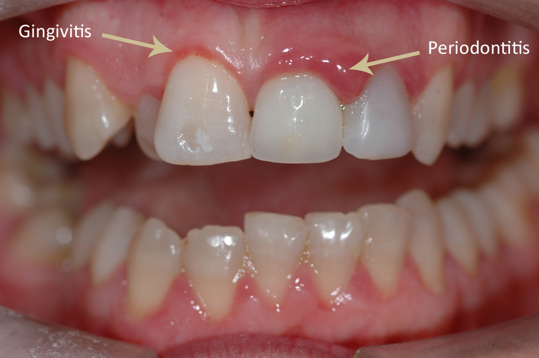

Gum disease
Gum disease
Gum disease is also referred to as periodontal disease.It is caused by plaque, the sticky film of bacteria that is constantly forming the teeth.It is the infection of the tissues that surround and support the teeth.
Gingivitis is the earliest stage of gum disease.It is the inflammation of gums.At this stage the disease is reversible as the bone and connective tissues that hold the teeth in place are not affected.
Periodontitis stage, the bone and the fibers that hold the teeth in place are irreversibly damaged. The gums begin to form a pocket below the gum line, which encourages penetration and growth of plaque below the gum line.
Advanced Periodontitis is the more advanced stage of gum disease where bone of your teeth are being destroyed, which can cause your teeth to shift or loosen. This can affect your bite and how you eat and communicate.
Symptoms
Symptoms of Gum disease include:
• Red or swollen gums (spongy)
• Tender or bleeding gums(Painful on chewing )
• Loose teeth
• Sensitive teeth
• Receding gums or longer appearing teeth
How to treat Gum disease
It is possible that you may have gum disease with no warning signs that is one reason why regular health check ups are important. At early stage gum disease is reversible and can be eliminated by dental cleaning followed by daily brushing and flossing.
• Visit dentist for dental cleaning or scaling(twice in one year)
•Severely compromised gums require flap surgery /gum surgery with or without bone graft